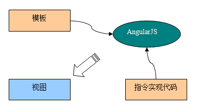

重写示例：模板、指令和视图
重点：AngularJS最显著的特点是用静态的HTML文档，就可以生成具有动态行为的页面。
描述：HTML文件看起来像普通的HTML，只是其中多了一些特别的标记 （比如：ng-app,ez-clock等等）。
在Angular中，这个HTML文件被称为模板。
详细描述：ng-app这样的标记我们称之为指令。
模板通过指令指示AngularJS进行必要的操作。
比如：ng-app指令用来通知AngularJS自动引导应用；ez-clock 指令用来通知AngularJS生成指定的时钟组件。
示例： 
说明：当AngularJS启动应用时，它会通过一个编译器解析处理这个模板文件，生成的结果就是： 视图：
模板（包含指令的HTML文件）和指令实现 （JavaScript文件），AngularJS将这两部分拼装起来，生成了最终的视图。